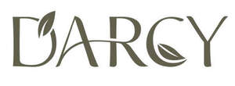

Trade Mark Journal No.2025/029 18 July 2025
UK00004216740 10 June 2025 (3,5,21,35,44)

- Class 3
- Non-medicated cosmetics and toiletry preparations; beauty preparations; beauty care preparations; hair cosmetics; non-medicated dentifrices; perfumery, essential oils; colognes; eaux de toilette; body and facial oils; sun-tanning milks, gels and oils and after-sun preparations; cuticle oils; perfume oils; natural oils for perfumes; cosmetic oils; aromatherapy oils; non-medicated massage preparations; massage oils and lotions; facial massage oils and lotions; body massage oils and lotions; massage waxes; bleaching preparations and other substances for laundry use; cleaning, polishing and abrasive preparations; cosmetics; organic cosmetics; natural cosmetics; multifunctional cosmetics; non-medicated body sprays; cleaning foam; non-medicated hand washes; non-medicated face care preparations; non-medicated face scrubs; facial cleansers; beauty masks; toilet water; non-medicated lotions; face and body lotions; beauty lotions; non-medicated hand lotions; non-medicated hand care preparations; non-medicated foot care preparations; non-medicated foot lotions; non-medicated foot soaks; non-medicated creams; non-medicated shampoos; waterless shampoo; baby shampoo; baby shampoo mousse; shampoo bars; shampoo for animals; emollient shampoos; dandruff shampoo; hair conditioner; hair oil; hair serums; hair moisturising conditioners; baby hair conditioner; hair lotions; hair moisturizers; hair tonics; hair gel; non-medicated balm for hair; non-medicated oral care preparation; non-medicated mouthwashes; non-medicated mouth sprays; non-medicated soaps; skin soap; toilet soap; deodorant soap; shower soap; shaving soap; antiperspirant soap; bath soap; perfumed soap; aloe soap; liquid soap; bars of soap; cosmetic soap; hand soap; body soap; scented soaps; liquid soap used in foot bath; sponges impregnated with soaps; facial soaps; granulated soaps; non-medicated moisturisers; non-medicated antiperspirants; non-medicated douches; non-medicated toothpaste; non-medicated oils; non-medicated bath preparations; non-medicated bubble bath preparations; bath and shower gels; bath and shower foam; foaming bath liquids; non-medicated bath oils; non-medicated bath powders; non-medicated bath pearls; non-medicated skincare preparations; non-medicated eye care products; non-medicated creams for the eyes; neck cream; blemish balm creams; non-medicated skincare and body care cosmetics; non-medicated face and body creams; non-medicated face and body masks; non-medicated skin balms; non-medicated skin tonics; face wash; face gels; face powders; face scrub; face oils; skin calming serum; make-up; make-up preparations for the face and body; make-up kits comprised of cosmetics; liquid make-up; cream make-up; powder make-up; lip cosmetics; non-medicated lip balms; non-medicated lip coatings; lipsticks; cream lipsticks; liquid lipsticks; matte lipsticks; lip glosses; lip scrub; tinted lip balm; SPF Lip Balm; lip liner pencil; lipstick pencil; mascara; eye shadow; eye shadow pencil; pearl powder shadow; powder blush; cream blush; face powder for cosmetic purposes; solid powder for compacts (cosmetics); compact powder; loose powder; setting powder (cosmetics); make-up foundations; foundation (cosmetics); concealer; nail polish; anti-aging skincare preparations; anti-ageing serum; anti-ageing moisturiser; cosmetic creams for firming skin around eyes; cosmetic patches for skin care; non-medicated nutritional creams; non-medicated cleansing creams; non-medicated grooming preparations; non-medicated shampoos for animals; non-medicated pet shampoos; non-medicated baby care products; non-medicated diaper rash cream; non-medicated nappy cream; non-medicated scalp treatments; non-medicated throat sprays; non-medicated dental rinse; non-medicated sun care preparations; toiletries and toiletry preparations; deodorants for personal use.
- Class 5
- Pharmaceuticals, medical and veterinary preparations; sanitary preparations for medical purposes; dietetic food and substances adapted for medical or veterinary use, food for babies; multivitamins; dietary supplements for human beings and animals; vitamin supplements; nutritional supplements; probiotic supplements; herbal supplements; homeopathic supplements; flaxseed dietary supplements; calcium supplements; anti-oxidant supplements; protein supplements; dietary supplements consisting of vitamins; prebiotic supplements; food supplements; zinc dietary supplements; mineral nutritional supplements; propolis dietary supplements; acai powder dietary supplements; liquid dietary supplements; wheat dietary supplements; casein dietary supplements; yeast dietary supplements; enzyme dietary supplements; dietary supplements for animals; plasters, materials for dressings; material for stopping teeth, dental wax; disinfectants; preparations for destroying vermin; fungicides, herbicides; air deodorant; medicated skin care preparations; dermatological pharmaceutical products; pharmaceutical preparation for skin care; medicinal creams for skin care; skin care creams for medical use; medicated skin care lotions; pharmaceutical skin lotions; antibiotic dermatological products; pharmaceutical moisturising creams; pharmaceutical acne cleansers; pharmaceutical acne creams; medicinal serums; medicated skin care oils; antiseptic body care preparations; pharmaceutical moisturising body lotion; air deodorising preparations; air purifying preparations; medicine; herbal medicine; medicine tonics; cough medicine; bacterial preparations for medical and veterinary use; veterinary vaccines; yeast for medical, veterinary or pharmaceutical purposes; medicated hair care preparations; medicated toiletry preparations; medicated lotions; eye patches for medical purposes; eye drops; sunburn ointments; pharmaceutical products and preparations to prevent stretch marks; sanitizing wipes; impregnated medicated wipes; disinfectant soap; medicated soap; medicated dentifrices; antimicrobial facewashes; pharmaceutical cold preparations; collagen for medical purposes; pharmaceutical products for ophthalmological use; radiopharmaceutical products; pharmaceutical products and preparations for hydrating the skin during pregnancy.
- Class 21
- Household or kitchen utensils and containers; cookware and tableware, except forks, knives and spoons; combs and sponges; brushes, except paintbrushes; brush-making materials; articles for cleaning purposes; unworked or semi-worked glass, except building glass; glassware, porcelain and earthenware; cosmetic, hygiene and beauty care utensils; skin care cream dispensers; cosmetic and toilet utensils; brushes for personal hygiene; cosmetic brushes; cosmetics applicators; containers for cosmetics; cleaning brushes; cleaning cloths; cosmetic utensils; cosmetic sponges; cosmetic spatulas; cosmetic apparatus for microdermabrasion.
- Class 35
- Advertising, marketing and sales promotions; business management, organization and administration; office functions; marketing research in the fields of cosmetics, perfumery and beauty products; online ordering services; retail services and wholesale services connected with the sale of non-medicated cosmetics and toiletry preparations, beauty preparations, beauty care preparations, hair cosmetics, non-medicated dentifrices, perfumery, essential oils, colognes, eaux de toilette, body and facial oils, sun-tanning milks, gels and oils and after-sun preparations; retail services and wholesale services connected with the sale of cuticle oils, perfume oils, natural oils for perfumes, cosmetic oils, aromatherapy oils, non-medicated massage preparations, massage oils and lotions, facial massage oils and lotions, body massage oils and lotions, massage waxes, bleaching preparations and other substances for laundry use, cleaning, polishing and abrasive preparations; retail services and wholesale services connected with the sale of cosmetics, organic cosmetics, natural cosmetics, multifunctional cosmetics, non-medicated body sprays, cleaning foam, non-medicated hand washes, non-medicated face care preparations, non-medicated face scrubs, facial cleansers, beauty masks, toilet water, non-medicated lotions, face and body lotions, beauty lotions, non-medicated hand lotions, non-medicated hand care preparations, non-medicated foot care preparations, non-medicated foot lotions, non-medicated foot soaks, non-medicated creams, non-medicated shampoos, waterless shampoo, baby shampoo, baby shampoo mousse, shampoo bars, shampoo for animals, emollient shampoos, dandruff shampoo, hair conditioner, hair oil, hair serums, hair moisturising conditioners, baby hair conditioner, hair lotions, hair moisturizers, hair tonics, hair gel, non-medicated balm for hair, non-medicated oral care preparation, non-medicated mouthwashes, non-medicated mouth sprays, non-medicated soaps, skin soap, toilet soap, deodorant soap, shower soap, shaving soap, antiperspirant soap, bath soap, perfumed soap, aloe soap, liquid soap, bars of soap, cosmetic soap, hand soap, body soap, scented soaps, liquid soap used in foot bath, sponges impregnated with soaps, facial soaps, granulated soaps, non-medicated moisturisers, non-medicated antiperspirants, non-medicated douches, non-medicated toothpaste, non-medicated oils, non-medicated bath preparations, non-medicated bubble bath preparations, bath and shower gels, bath and shower foam, foaming bath liquids, non-medicated bath oils, non-medicated bath powders, non-medicated bath pearls, non-medicated skincare preparations, non-medicated eye care products, non-medicated creams for the eyes, neck cream, blemish balm creams, non-medicated skincare and body care cosmetics, non-medicated face and body creams, non-medicated face and body masks, non-medicated skin balms, non-medicated skin tonics, face wash, face gels, face powders, face scrub, face oils, skin calming serum, make-up, make-up preparations for the face and body, make-up kits comprised of cosmetics, liquid make-up, cream make-up, powder make-up, lip cosmetics, non-medicated lip balms, non-medicated lip coatings, lipsticks, cream lipsticks, liquid lipsticks, matte lipsticks, lip glosses, lip scrub, tinted lip balm, SPF Lip Balm, lip liner pencil, lipstick pencil, mascara, eye shadow, eye shadow pencil, pearl powder shadow, powder blush, cream blush, face powder for cosmetic purposes, solid powder for compacts (cosmetics), compact powder, loose powder, setting powder (cosmetics), make-up foundations, foundation (cosmetics), concealer, nail polish, anti-aging skincare preparations, anti-ageing serum, anti-ageing moisturiser, cosmetic creams for firming skin around eyes, cosmetic patches for skin care, non-medicated nutritional creams, non-medicated cleansing creams, non-medicated grooming preparations, non-medicated shampoos for animals, non-medicated pet shampoos, non-medicated baby care products, non-medicated diaper rash cream, non-medicated nappy cream, non-medicated scalp treatments, non-medicated throat sprays, non-medicated dental rinse, non-medicated sun care preparations, toiletries and toiletry preparations, deodorants for personal use; retail services and wholesale services connected with the sale of pharmaceuticals, medical and veterinary preparations; retail services and wholesale services connected with the sale of sanitary preparations for medical purposes, dietetic food and substances adapted for medical or veterinary use, food for babies, multivitamins, dietary supplements for human beings and animals, vitamin supplements, nutritional supplements, probiotic supplements, herbal supplements, homeopathic supplements, flaxseed dietary supplements, calcium supplements, anti-oxidant supplements, protein supplements, dietary supplements consisting of vitamins, prebiotic supplements, food supplements, zinc dietary supplements, mineral nutritional supplements, propolis dietary supplements, acai powder dietary supplements, liquid dietary supplements, wheat dietary supplements, casein dietary supplements, yeast dietary supplements, enzyme dietary supplements, dietary supplements for animals, plasters, materials for dressings, material for stopping teeth, dental wax; retail services and wholesale services connected with the sale of disinfectants, preparations for destroying vermin, fungicides, herbicides, air deodorant, medicated skin care preparations, dermatological pharmaceutical products, pharmaceutical preparation for skin care, medicinal creams for skin care, skin care creams for medical use, medicated skin care lotions, pharmaceutical skin lotions, antibiotic dermatological products, pharmaceutical moisturising creams, pharmaceutical acne cleansers, pharmaceutical acne creams, medicinal serums, medicated skin care oils, antiseptic body care preparations, pharmaceutical moisturising body lotion, air deodorising preparations, air purifying preparations, medicine, herbal medicine, medicine tonics, cough medicine, bacterial preparations for medical and veterinary use, veterinary vaccines, yeast for medical, veterinary or pharmaceutical purposes; retail services and wholesale services connected with the sale of medicated hair care preparations, medicated toiletry preparations, medicated lotions, eye patches for medical purposes, eye drops, sunburn ointments, pharmaceutical products and preparations to prevent stretch marks, sanitizing wipes, impregnated medicated wipes, disinfectant soap, medicated soap, medicated dentifrices, antimicrobial facewashes, pharmaceutical cold preparations, collagen for medical purposes, pharmaceutical products for ophthalmological use, radiopharmaceutical products, pharmaceutical products and preparations for hydrating the skin during pregnancy, household or kitchen utensils and containers, cookware and tableware, except forks, knives and spoons; retail services and wholesale services connected with the sale of combs and sponges, brushes, except paintbrushes; retail services and wholesale services connected with the sale of brush-making materials, articles for cleaning purposes, unworked or semi-worked glass, except building glass; retail services and wholesale services connected with the sale of glassware, porcelain and earthenware, cosmetic, hygiene and beauty care utensils; retail services and wholesale services connected with the sale of skin care cream dispensers, cosmetic and toilet utensils, brushes for personal hygiene, cosmetic brushes, cosmetics applicators, containers for cosmetics, cleaning brushes, cleaning cloths, cosmetic utensils, cosmetic sponges, cosmetic spatulas, cosmetic apparatus for microdermabrasion.
- Class 44
- Medical services; veterinary services; hygienic and beauty care for human beings or animals; agriculture, aquaculture, horticulture and forestry services; cosmetic body care services; cosmetic body care services provided by health spas; cosmetic facial and body treatment services; cosmetic treatment services for the body, face and hair; skin care salon services; hygienic and beauty care services; services for the care of the hair; make-up services; cosmetic make-up services; application of cosmetic products to the body; consultancy in the field of body and beauty care; cosmetic surgery services; services for the care of the skin and face; consultation services relating to skin care; medical services for treatment of the skin; advisory services relating to beauty care; nail care services; home health care services; cosmetic dentistry services; medical services for the treatment of conditions of the human body; advisory services relating to hair care and health care; facial beauty treatment services; cosmetic skin tanning services for human beings; body waxing services for the human body; health spa services; body piercing services; body art services; health care relating to therapeutic massage; hygienic and beauty care; advisory services relating to beauty treatment. .
Beauberry Skincare Ltd
Representative: Trade Mark Wizards Limited